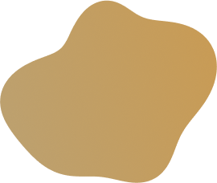
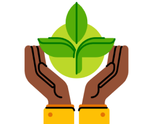
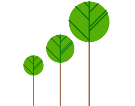

Misi
Memastikan kesehatan dan kenyamanan konsumen dengan bahan-bahan organik ramah lingkungan sesuai
dengan visi perusahaan.
Menjadi brand pertama yang muncul di benak konsumen ketika berbicara mengenai product bath and
body care
organik dengan mengedepankan kualitas produk dan pelayanan.
Memberikan pengalaman perawatan kulit yang terpercaya, konsisten, dan menyenangkan kepada
seluruh
konsumen dengan menjunjung tinggi kualitas produk dan layanan yang diberikan.
Meningkatkan kesadaran masyarakat melakukan edukasi dan ajakan untuk menggunakan produk organik

